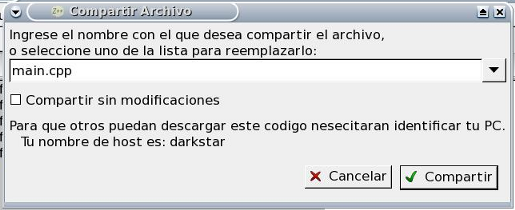

Diálogo Compartir Fuentes

Este cuadro de diálogo permite compartir un archivo fuente a travez de una red interna (LAN). Un usuario debe utilizar este diálogo para poner el contenido del archivo a disposición de los demás, y estos debe utilizar el díalogo Abrir Compartido para copiar este contenido a sus entornos.
El fuente que se va a compartir es el fuente que estaba seleccionado al abrir este diálogo. El nombre que se le solicita es para que los demás usuarios puedan identificar cada archivo. Si especifica un nombre que ya había sido utilizado (puede utilizar la lista desplegable para ver los nombres ya utilizados) para compartir otro archivo, el nuevo contenido reemplazará al anterior. Los nombres son locales a cada máquina; es decir, que dos pcs diferentes dentro de la red pueden compartir archivos distintos con el mismo nombre. Esto se debe a que el otro usuario, para recibir una copia del código debe identificar a la pc y a el archivo. La pc se identifica por su nombre de red o su dirección IP. Para facilitar la tarea, el nombre de red de su pc (nombre del Host) se muestra al pie de este mismo diálogo.
La casilla "Compartir sin modificaciones" determina si los demás usuarios descargarán el contenido de ese fuente exactamente como se encontraba al momento de comenzar a compartirlo, o si lo obtendran como se encuentra al momento de descargarlo. Es decir, si esta opción está seleccionada, el archivo se comparte exactamente como está en ese momento, y si se modifica luego, los demás usuarios no verán estas modificaciones. Si esta opción no está seleccionada, cada vez que un usuario copia el archivo, se copia la versión actual del mismo. En este último caso, el archivo aún debe estar abierto en la pc que lo comparte, mientras que en el primero no.